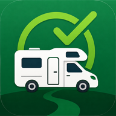

Lista camper
Installa l’app oppure apri direttamente la lista.
Apri la listaPer avere l’icona sulla schermata Home: tocca Condividi in fondo a Safari, poi Aggiungi a Home. Su iPhone non esiste un pulsante di installazione automatico.

Installa l’app oppure apri direttamente la lista.
Apri la listaPer avere l’icona sulla schermata Home: tocca Condividi in fondo a Safari, poi Aggiungi a Home. Su iPhone non esiste un pulsante di installazione automatico.